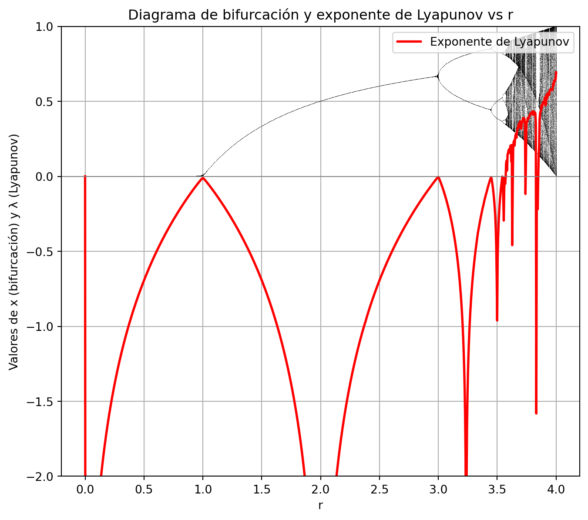
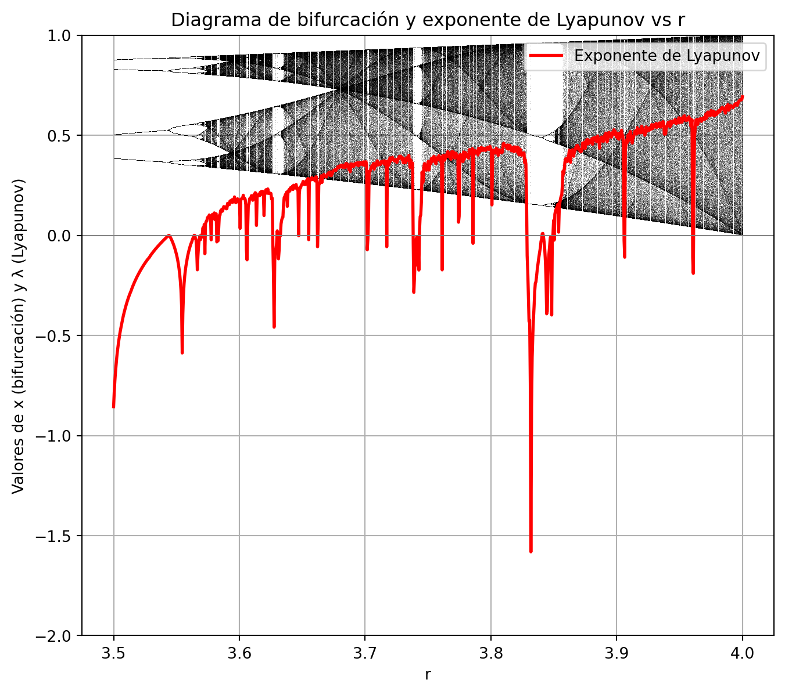

12 El exponente de Lyapunov y el caos
En la siguiente gráfica vemos lo que hemos ido contanto pormenorizadamente en la sección anterior. Cada vez que el sistema está en una zona no caótica, el exponente de Lyapunov es negativo.
De hecho, si hacemos zoom en la zona donde aparece el caos, vemos que en las ventanas de periodicidad el exponente de Lyapunov se vuelve negativo.

La pregunta que debemos hacer es la siguiente, ¿es el exponente de lyapunov un indicador que nos puede decir si una serie temporal que estamos observando es caótica? Una serie temporal es simplemente una lista de valores que varían con el tiempo, como por ejemplo la temperatura diaria de una ciudad: \(T_0, T_1, T_2, \dots\).
Llamamos a esos valores \(x_0, x_1, x_2, \dots\) y cada subíndice indica la “etapa” o “momento” en que lo medimos.
Decir que una serie temporal es caótica significa, de acuerdo a la teoría del caos, que ha de cumplir tres condiciones:
- Es determinista: existe una “regla” (una función) que, dado el estado actual \(x_n\), calcula el siguiente \(x_{n+1}\). No hay azar puro: si conoces \(x_n\) exactamente, sabes \(x_{n+1}\).
- Tiene sensibilidad a condiciones iniciales: dos valores muy parecidos \(x_0\) y \(x_0 + \delta_0\) se separan de forma exponencial a medida que iteras la regla. Aunque \(\delta_0\) sea minúsculo, al cabo de varias iteraciones la diferencia es muy grande.
- Se ve impredecible a largo plazo: aunque la regla sea determinista, al crecer las diferencias “desordenadas” parece un comportamiento aleatorio.
Por ejemplo, ir anotando los números que salen directamente de una ruleta no es una serie caótica, ya que no hay ninguna regla para saber \(x_{n+1}\) si conoces \(x_n\) exactamente. Eso a pesar de ser impredecible a largo plazo. Es muy importante hacer notar, que un sistema caótico tiene unas reglas deterministas muy claras. En este caso no se puede calcular ningún exponente de Lyapunov porque no hay función \(f\) continua o diferenciable que escriba \(x_{n+1} = f(x_n)\). Si intentáramos “forzar” un cálculo, estaríamos midiendo ruido y obtendríamos resultados sin sentido práctico: un “valor de \(\lambda\)” aquí no nos dice nada sobre determinismo o caos, sino solo sobre la aleatoriedad de los datos.
Otro ejemplo de sistemas que no cumple estas premisas es la bolsa. A todo el mundo le parece que predecir el valor de una acción a lo largo del tiempo es muy complejo, pero ¿es caótico?. Para ello veremos como fuciona la bolsa. El precio de una acción o de un índice bursátil depende de decenas de variables:
• Resultados financieros de las empresas.
• Noticias económicas o políticas.
• Sentimiento de los inversores y rumores.
• Tipos de interés, inflación, datos macroeconómicos.
• Eventos inesperados (crisis, pandemias, etc.).
Cada día (o incluso cada minuto) entran al mercado miles de órdenes de compra y venta, influidas por estas variables.
No existe una regla sencilla \(x_{n+1} = f(x_n)\). A diferencia del mapa logístico, donde si conocemos \(x_n\) y el parámetro \(r\) podemos calcular \(x_{n+1} = r\,x_n\,(1 - x_n)\), en la bolsa no hay una función sencilla y fija que relacione el precio de hoy con el de mañana.
Por estas razones, el precio de la bolsa es, en gran medida, un proceso aleatorio que incorpora ruido y reacciones humanas, no un sistema determinista como el mapa logístico.
Volviendo a la pregunta original. ¿es una condición necesaria y suficiente para que una serie sea caótica que su exponente de Lyapunov sea positivo?
De acuerdo a la investigación bibliográfica realizada, un exponente de Lyapunov mayor \(\lambda_{\max} > 0\) es condición necesaria para que un sistema determinista sea caótico, pero no basta por sí solo para garantizar caos en sentido completo.
Un sistema se considera caótico si cumple, entre otros, el criterio de sensibilidad a condiciones iniciales: dos trayectorias iniciadas en puntos arbitrariamente próximos se separan exponencialmente con el tiempo. El exponente de Lyapunov \(\lambda_{\max}\) mide justamente ese crecimiento (o decrecimiento) exponencial promedio de una pequeña desviación $ _0 $. Si \(\lambda_{\max} < 0\), todas las pequeñas diferencias se contraen, y el sistema converge a un punto fijo o a un ciclo periódico estable: no hay caos. Por lo tanto, tener \(\lambda_{\max} > 0\) es condición necesaria para hablar de caos determinista
Aunque \(\lambda_{\max} > 0\) garantiza sensibilidad exponencial, para que un sistema sea considerado caótico en el sentido matemático completo también se requiere cumplir otras condiciones mas específicas, que no citaré en este texto por estar muy por encima de mi nivel. La explicación larga para el lector interesado se haya aquí:
– “The short answer is ‘No’. As reflected in many of the other posted responses, positive Lyapunov exponents, by themselves, do not always indicate ‘chaos’. Additional information about the system … needs to be performed to conclusively diagnose ‘chaos’ in most systems.”
Fuente: ResearchGate – Does positive Lyapunov exponent always mean chaos?
Sin embargo, en la práctica experimental o de series temporales reales, suele aceptarse que **si la estimación de \(\lambda_{\max}\) resulta positiva y se ha verificado que:
- El sistema es determinista (o modelado por un conjunto de ecuaciones conocidas).
- La variable observada permanece en un rango acotado
- Al simular o analizar la trayectoria, no se observan comportamientos puramente periódicos ni divergencias triviales.
Entonces, la probabilidad de que el sistema sea caótico es muy alta. Varios autores y estudios confirman que, bajo condiciones razonables de ruido controlado, un exponente de Lyapunov mayor positivo es una señal muy confiable de caos determinista.
– “The Largest Lyapunov Exponent (LLE) has been frequently used to investigate presence of chaotic behavior as well as nonlinear characteristics of time series.”
Fuente: ScienceDirect – Largest Lyapunov Exponent
Aunque en teoría hay que cumplir dos condiciones adicionales, en la práctica, sobre todo en áreas aplicadas (física experimental, meteorología, etc.), una \(\lambda_{\max}\) positiva suele considerarse como “casi certeza” de caos siempre que los cálculos se hayan hecho con series suficientemente largas y con ruido controlado.
12.0.1 Referencias principales
- Wikipedia. “Chaos theory.”
https://en.wikipedia.org/wiki/Chaos_theory
- ResearchGate. “Does positive Lyapunov exponent always mean chaos?”
https://www.researchgate.net/post/Does-positive-Lyapunov-exponent-always-mean-chaos
- Wikipedia. “Butterfly effect.”
https://en.wikipedia.org/wiki/Butterfly_effect
- ScienceDirect Topics. “Largest Lyapunov Exponent.”
https://www.sciencedirect.com/topics/engineering/largest-lyapunov-exponent